Assessing Machine Learning Problems for Fairness Before Fitting
Sarah M Brown
University of Rhode Island
joint work with Surbhi Rathore
1
Why Fairness in Machine Learning?
2
Why Fairness in Machine Learning?
3
Why Fairness in Machine Learning?
4
Algorithmic Fairness Interventions
- blame the data, not my problem
- repair the data (preprocessing)
- alter the learning (inprocessing)
- change how the model is used (postprocessing)
5
An Alternative Proposal
reformulate the problems that we apply AI to so that they are better suited to producing socially acceptable outcomes
Note
Passi et al 2019
Chen et al
6
More on Obermyer’s result
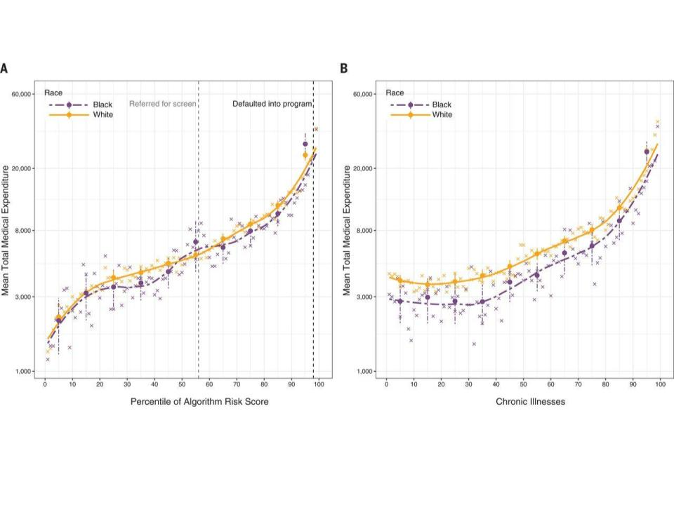
7
The disparity was larger on detailed measures
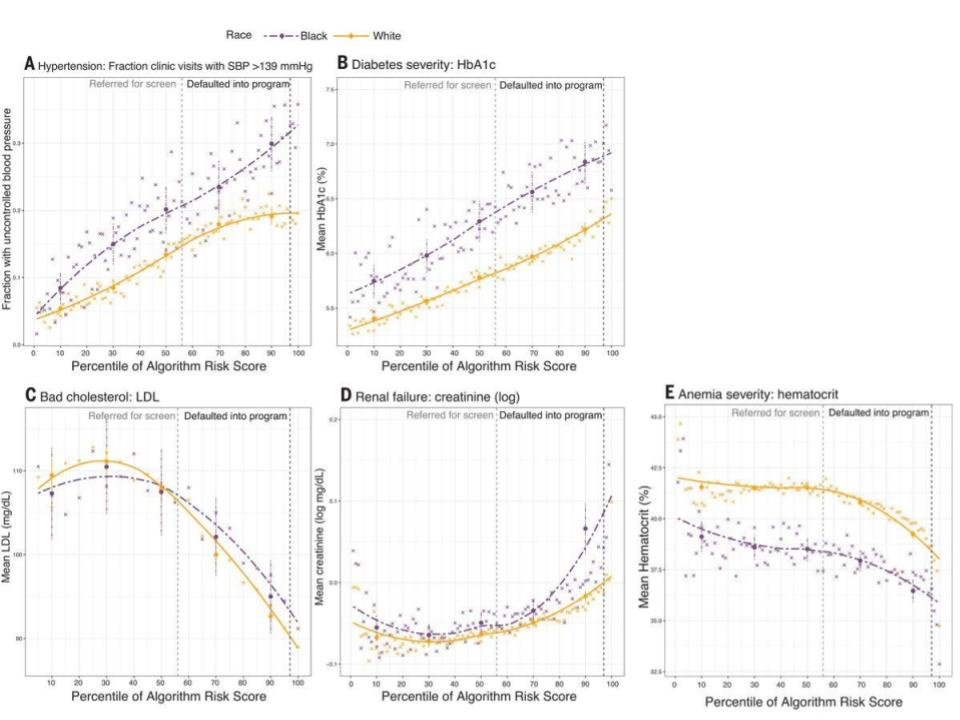
8
Potential Impact of Reformulation
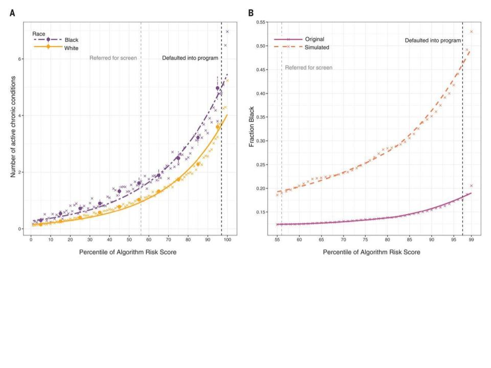
9
How do we know when to reformulate?
Proposal
computationally efficient information theoretic quantities for evaluating problem setups
10
Agenda:
- Information Theory
- AI Task Formalization
- Information theoretic task fairness
- Experimental Results
11
Why Information Theory
12
Information Theory
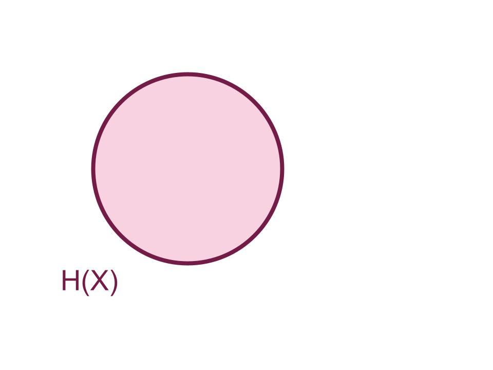
13
Information Theory
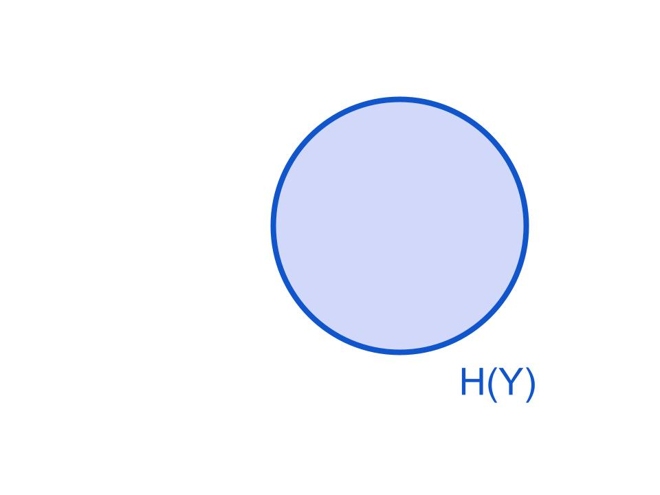
14
Information Theory
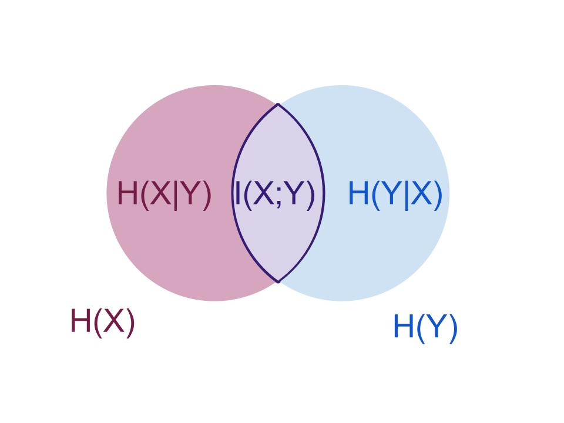
15
Information Theory
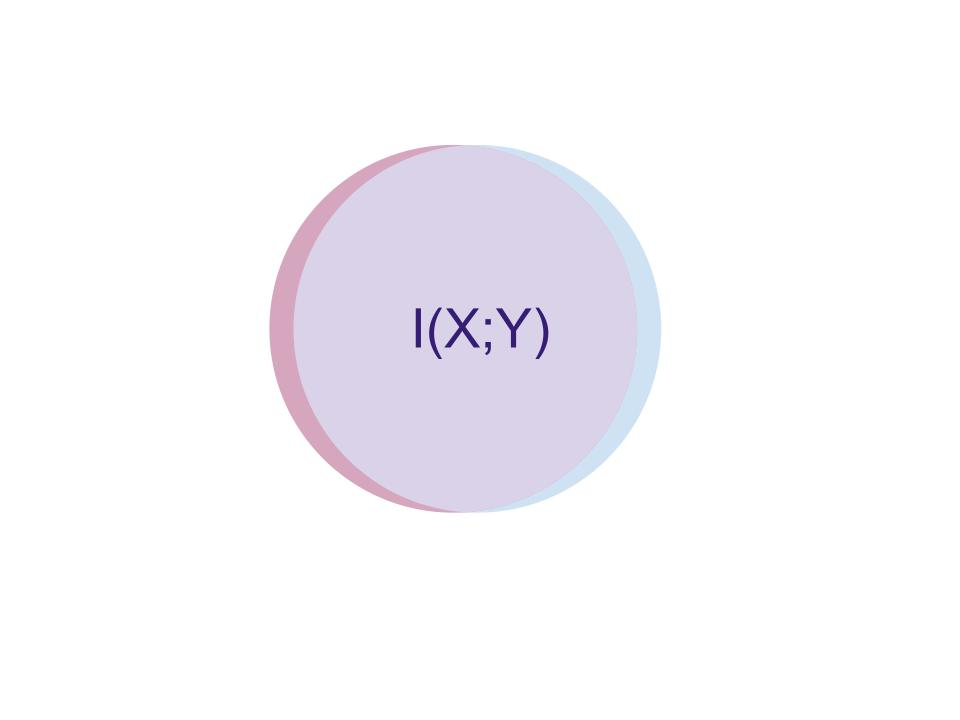
16
Formally
\[\operatorname{I}(X;Y) = \sum_{x,y} p(x,y) \log \frac{p(x,y)}{p(x)p(y)} \]
\[\operatorname{I}(X;Y) = \operatorname{D_{KL}}(p(X,Y) || p(X)p(Y) ) \]
17
Conditional MI
\[\operatorname{I}(X;Y|Z) &=\sum_z p(z) \sum_{x,y} p(x,y|z) \log \frac{p(x,y|z)}{p(x|z)p(y|z)} \]
18
Tasks in AI and ML
Note
- typically hoc
- hard to apply a formal technique
- lets formalize
19
Let’s predict concept \(Z\) !
idealized task: a prediciton target concept, \(Z\)
20
Can we even do that theoretically?
an idealized task is plausible if there exist some set of features \(X^*\) that can be used to for prediction
\[ \operatorname{I}(X^*; Z) = 1- \epsilon\]
21
But can we really do that?
a realized task include measurable features \(X\) and a measurable proxy target \(Y\)
22
Example: Obermyer
- \(Z\) is who needs managed care
- \(X^*\) is a full picture of health and possibly some SES
- \(X\) is the electronic health record
- \(Y\) the datascientists chose health care expenditures
23
ML Tasks
- Idealized task: predict \(Z\) (latent)
- Plausible Task: predict \(Z\) from \(X^*\) (possibly immeasurable or expensive)
- Realized task: predict \(Y\) (observed) from \(X\) (observed), interpret as \(\hat(Y)\) as \(Z\)
realized task is somethign we can
choose
and manipulate, but most
ML research considers the dataset (and therefore the task) fixed
24
Information Theoretic Task Fairness
25
Classical Fairness Criteria
- Independence: \(\operatorname{I}(A;\hat{Y}) = 0\)
- Separation: \(\operatorname{I}(A;\hat{Y}|Y) = 0\)
- Sufficiency: \(\operatorname{I}(A;Y|\hat{Y}) = 0\)
26
Classical Fairness Criteria in Realized Tasks
- Feature Independence: \(\operatorname{I}(A;X) = 0\)
- Proxy Independence: \(\operatorname{I}(A;Y) = 0\)
- Separation: \(\operatorname{I}(A;X|Y) = 0\)
- Sufficiency: \(\operatorname{I}(A;Y|X) = 0\)
27
Approximations
Informative Beyond Demographics
\[ \operatorname{I}(Y;X) > \operatorname{I}(A;X )\]
Group-wise Uniformly Informative Beyond Demographics
\[ \operatorname{I}(Y;X|A=a) > \operatorname{I}(A;X ) \forall a \in A\]
28
Equality of Information
\[ \operatorname{I}(Y;X|A=a_1) - \operatorname{I}(Y;X|A=a_2) < \epsilon \]
29
Feature Selection
Non-demographic Task Relevance
\[\data_{\bar{\demographics}} = \{ \data_i : \info(\data_i,\proxy) > \info(\data_i,\demographics) \}\]
Maximally Predictive, Minimally Demographic
\[\begin{split} _{\bar{\demographics}} = \max_i \info(\data_{i},\proxy) \operatorname{and}\\
\min_i \info(\data_i,\demographics)\end{split}\]
30
Estimating Distributions
- tabular data, histogram estimates of density make MI easy to calculate.
- Number of bins does not impact the information theory comparisons
in nondegenerate cases
31
Practical Application
- determine idealized task
- collect data for a candidate realized task or several
- build histograms
- calculate MIs
- check for acceptability
- proceed, reformulate, or do not build
32
Obermeyer
Information gap (black vs white) is larger for costs than for Number of chronic illnesses
33
Adult Reconstruction
- Ding et al reconstructed the Adult dataset from source
- many features about 70k people
- continuous valued income instead of >50k binary
- they found that different binary prediction problems have different fairness
34
Informative beyond Demographics?
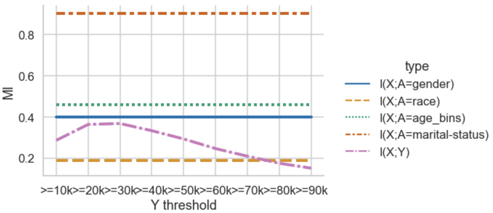
35
Equality of Information?
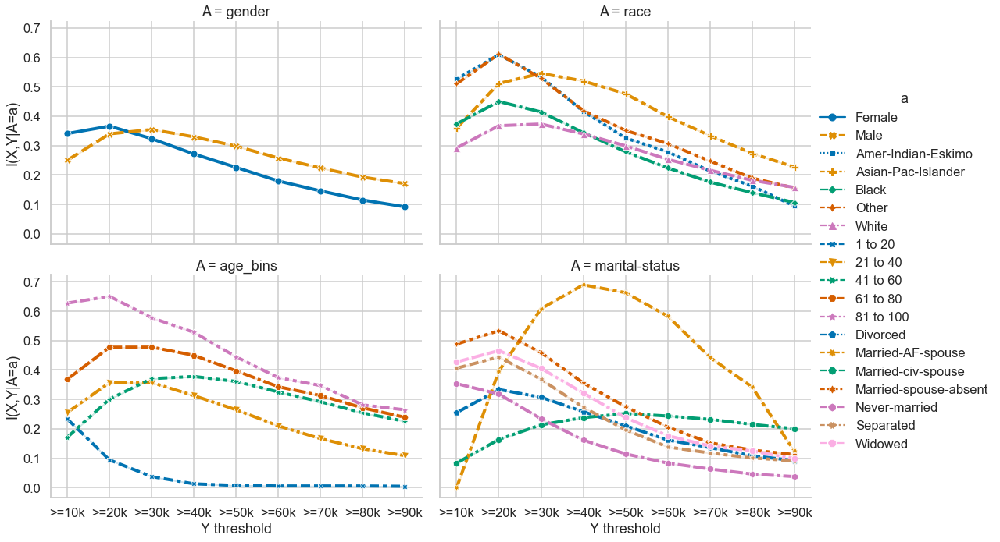
36
Separation ?
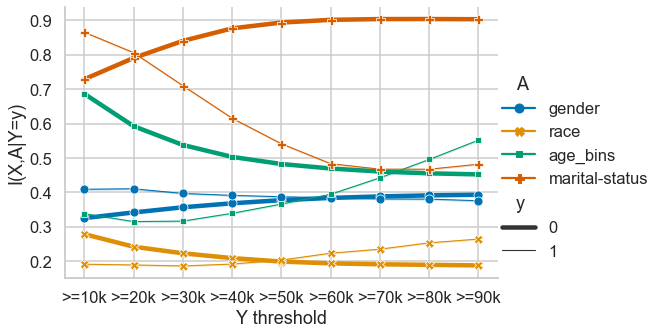
37
Feature Selection
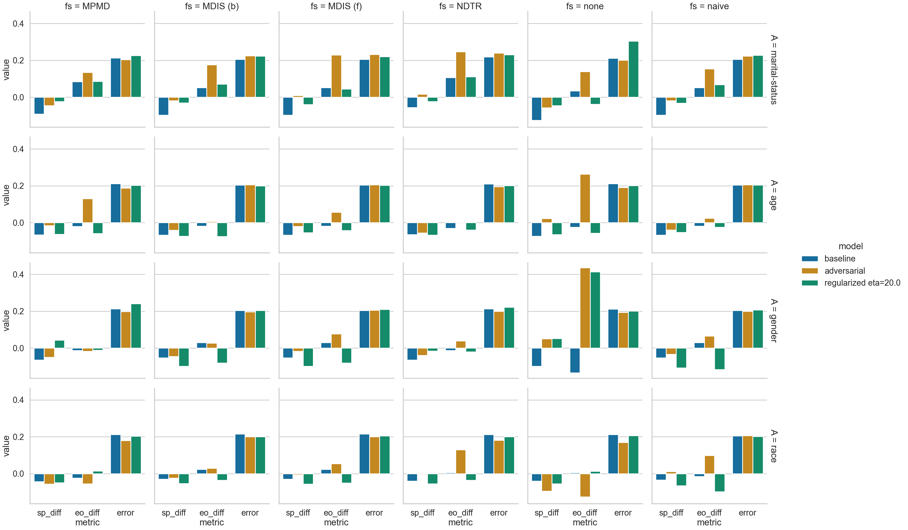
38
Conclusion
For modestly sized tabular datasets, we have a computationally efficient technique to assess if a problem is well specified enough to admit fairness
````{slide} Questions?
:class: section
brownsarahm@uri.edu
39